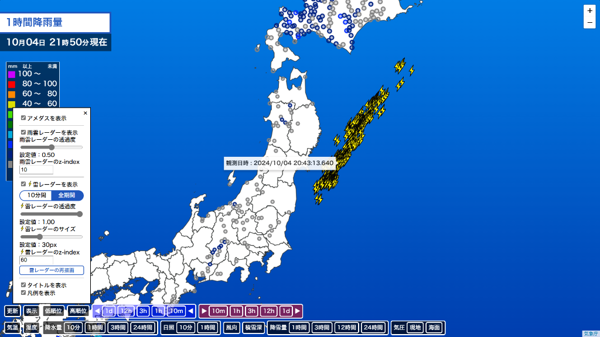

雷レーダー機能改善のお知らせ
雷レーダー機能改善のお知らせアップデートの詳細は以下のとおりです。
-
新機能
- 雷レーダー機能の改善を行いました。
今まで直近10分間の雷情報しか取得できていなかったのに対し、取得可能な全期間の雷情報を取得できるようになりました。
ただし「全期間」モードに設定した場合、お使いの端末によっては処理が追いつかずに表示されない場合があります。その際は下の「雷レーダーの再描画」を押して再描画をお試しください。

- 雷レーダー機能の改善を行いました。